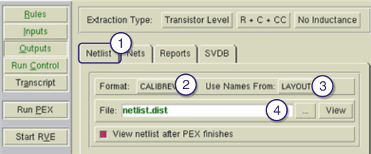

Use this procedure
to specify the netlist type you want to produce.
Procedure
- Click the Netlist tab.
- Choose the output format from
the Format: dropdown list.
- Choose the source (SCHEMATIC or LAYOUT)
for pex netlist net and instance names from the Use Names From:
dropdown list. If you choose SCHEMATIC, you must specify an LVS
report name on the Reports tab.
- Enter the PEX netlist filename.
Figure 1. Describing the Output Format